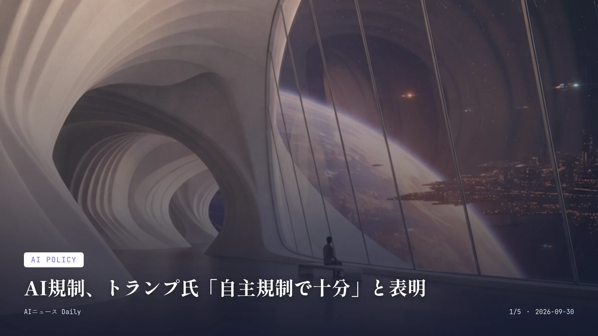
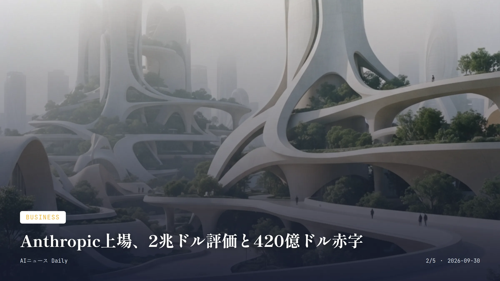
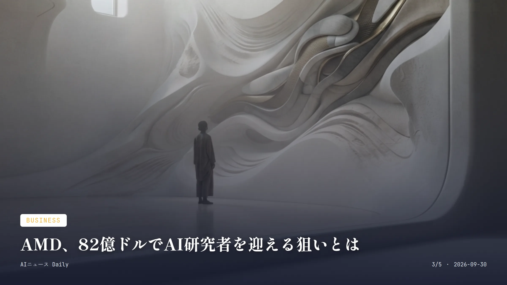
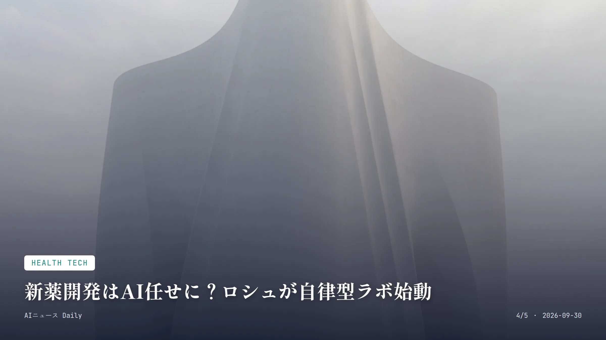

これは2026-09-30時点のアーカイブページです。最新のニュースはこちら
本サイトはアフィリエイトプログラムによる収益を得ている場合があります。
本サイトはGoogle AdSense等の広告配信サービスを利用しています。
目次

AI Policy
約2分で読める
AI規制、トランプ氏「自主規制で十分」と表明
AI企業ほぼ20社が自主規制協定に署名、政府サイトも始動
約20人 ホワイトハウスの昼食会に招かれたAI企業トップの人数
9月29日 自主規制協定とAmerica.gov発表の日付
トランプ米大統領は9月29日、ホワイトハウスにAmazon、Google、Meta、Microsoft、Nvidia、OpenAI、Anthropicなど主要AI企業の首脳ほぼ20人を招き、昼食会を開いた。会合後トランプ氏が語ったのは、新たな法規制ではなく業界による「徹底した自主規制」で十分だという考え方だ。司法省やFBIによる既存の枠組みで対応できる、という立場を崩さなかった。
参加企業は、AIシステムの内部監査や外部評価、取締役会による監督強化などを盛り込んだ「安全に関する協定」に署名したとされる。トランプ氏はこの協定について、法的拘束力はないものの「モラル上、拘束力がある」文書だと説明している。
同じ日、トランプ氏はAIを活用した政府情報サイト「America.gov」の運用開始も発表した。AI開発企業のトップたち自身が「開発を減速すべきだ」と声を上げてきた経緯もある中、政府としては規制強化より産業界の自主的な取り組みに賭ける姿勢がはっきりした格好だ。
なぜ重要か 法的拘束力を持たない自主規制という枠組みを米政府が公式に選んだのは、今後のAI規制のあり方を占ううえで小さくない転機になる。日本ではAI関連法やガイドライン整備が進むものの、米国のような包括的な自主規制の合意はまだ存在せず、この「自主規制モデル」が国際標準になるのか、それとも逆により厳しい規制を求める声が強まるのか、日本企業の海外展開にも波及しそうだ。

Business
約2分で読める
Anthropic上場、2兆ドル評価と420億ドル赤字
10月にもNasdaq上場へ、目論見書に「存在論的リスク」の文字も
2兆ドル超 想定される株式公開時の評価額
965億ドル 5月時点の非公開市場での評価額
420億ドル 2025年の純損失額
518億ドル 今後予定するインフラ投資計画額
Anthropicの株式公開（IPO）目論見書が9月28日までに複数メディアで確認され、想定評価額は2兆ドルを超える水準に達していることがわかった。5月の資金調達時点の評価額965億ドルから、実に2倍以上。モルガン・スタンレーやゴールドマン・サックス、JPモルガンが主幹事を務める見込みだという。
ただ数字を並べると景気のいい話ばかりではない。目論見書によれば、Anthropicは2025年に売上高約46億ドルに対し420億ドルの純損失を計上している。しかも今後は518億ドル規模のクラウド・計算基盤への投資も予定しているそうだ。
目論見書の80ページはリスク要因の説明に費やされていて、AIモデルが自己保存的な振る舞いを見せ害をもたらす可能性がある、とまで警告している。ダリオ・アモデイCEOといえばAI開発のペースを落とせと業界に呼びかけてきた張本人だ。その本人が巨額上場を進めているという構図に、注目が集まっている。
なぜ重要か 実現すればテック業界史上でも最大級の上場になり得る一方、目論見書自体がAIモデルの自己保存的リスクに言及するという、投資家に高評価と警鐘を同時に突きつける異例の内容になっている。日本の機関投資家や年金基金もNasdaq上場後は間接的にAnthropic株へのエクスポージャーを持つ可能性があり、急成長と巨額損失が同居する構造をどう評価するかは今後の論点になりそうだ。

Business
約2分で読める
AMD、82億ドルでAI研究者を迎える狙いとは
Fei-Fei Li氏のWorld Labsを買収、ロボットや物理AIへ布石
82億ドル AMDによるWorld Labs買収額（全株式交換）
2026年末 買収完了の見込み時期
約500億ドル AMD史上最大だった2022年のXilinx買収額
半導体大手AMDが、AI研究者フェイフェイ・リー氏率いる「World Labs」を全株式交換方式で約82億ドルにて買収することで合意した。買収完了は2026年末までを見込み、リー氏はAMDの最高科学責任者（チーフサイエンティスト）兼上級副社長として、リサ・スーCEO直属で加わることになる。
World Labsが手がけているのは、テキストや画像・映像から3次元環境を生成・再現・シミュレーションする「空間知能」モデルだ。ロボット学習向けの技術にも力を入れている。AMDとしては、この研究知見を自社の半導体・ソフトウエア開発ロードマップに取り込み、AIが推論やロボティクス、物理的な応用領域へ広がっていく流れに備えたいところだろう。
今回の買収額は、2022年の約500億ドルでのXilinx買収に次ぐAMD史上2番目の規模だ。AI処理チップ市場でNvidiaの背中を追うAMDが、次世代AIの研究開発力そのものを取り込みにきた形になる。
なぜ重要か AI開発の次の主戦場とされる「物理AI・ロボティクス」分野で、AMDがNvidiaに対抗する布石を打った動きであり、著名研究者を丸ごと迎え入れる形の買収は業界の人材獲得競争の激しさを物語る。日本の自動車・ロボットメーカーにとっても、AIチップと空間知能モデルの統合が進めば、今後の技術提携や部品調達の選択肢が広がる可能性がある。

Health Tech
約2分で読める
新薬開発はAI任せに？ロシュが自律型ラボ始動
「AI独立」目指すロシュ、フェーズ3成功率も上昇
80%超 2026年（年初来）のフェーズ3試験成功率
65% 2025年のフェーズ3試験成功率
40% AI・計算科学が関与したパイプライン判断の割合
最大20種 2030年までに市場投入を目指す新薬候補数
スイスの製薬大手ロシュが9月28日の投資家向け説明会で明らかにしたのは、研究開発を加速させる自律型AIラボの構築計画だ。同社は研究開発における「AI独立」を掲げていて、自律的なAI主導のラボの構築にはすでに着手していると、ジェネンテック研究開発部門のアビブ・レゲブ上級副社長が説明した。
同社によれば、2025年第4四半期から2026年第2四半期にかけての開発パイプラインの判断のうち40％はAIまたは計算科学が関わっていたという。フェーズ3試験の成功率は2026年の年初来で80％を超え、2025年の65％から上がった格好だ。2030年までに最大20種類の新薬候補を市場に投入する目標も掲げている。
AIの予測とラボでの実験結果を行き来させて精度を上げる「Lab in the Loop」方式を採用し、ABBロボティクスとの協業でサンプル搬送や検体処理を担う自律型ロボットの開発も進めている。研究開発の節約分から約2000億スイスフラン（約24億1000万ドル）を、2026年までに高インパクトなプログラムや生産性向上策へ振り向ける計画だ。
なぜ重要か 新薬開発には通常10年以上、巨額の費用がかかるものだが、AIとロボットを組み合わせた自律型ラボが実用段階に入れば、新薬が患者に届くまでの期間が縮まる可能性がある。日本でも製薬大手がAI創薬への投資を進めているが、成功率の具体的な改善数値まで公表した例はまだ少なく、他社が追随するかどうかが今後の焦点になりそうだ。
Health Tech
約2分で読める
医療AI導入に賛成7割超、政府調査でわかったこと
厚労白書、診断支援AIには72.4%が賛成の結果
72.4% 医師の診断支援AI導入に賛成の割合
3000人 調査の有効回答数（今年1〜2月実施）
26.3% 導入反対の理由で最多だった「安全性への不安」
厚生労働省が9月29日に公表したのは、医療・介護分野への人工知能（AI）やロボットなど先端技術の導入について、国民の70％超が肯定的な考えを示したという調査結果だ。同日の閣議で報告された2026年版厚生労働白書に盛り込まれており、白書では医師や看護師、介護職員などの人手不足が深刻化する中、65歳以上の高齢者人口がピークを迎える2040年ごろに向けて技術活用による効率化が欠かせないと強調している。
調査は今年1〜2月にインターネットで実施され、国内に住む20〜74歳から3000人の有効回答を得た。医師の診断を支援するAIの導入について「賛成」「やや賛成」と答えた人は合わせて72.4％にのぼった。
一方、先進技術の導入に「反対」「やや反対」と答えた人にその理由を尋ねると、「安全性に不安」が26.3％でトップ。「医師とのコミュニケーションが不足しそう」といった声も続いたという。
なぜ重要か 高齢化が進む日本で医療・介護人材の不足が深刻化する中、AI活用への国民の抵抗感が思ったより低いことを政府の公的調査が数値で示した点は注目に値する。ただ安全性への不安も一定数残っており、医療現場へのAI導入は丁寧な説明とセットで進める必要がありそうだ。海外でも医療AIへの期待は高まっているが、国民の受容度を白書という公的文書で定量的に示した例は珍しく、今後の政策論議の土台になりそうだ。
先頭に戻る